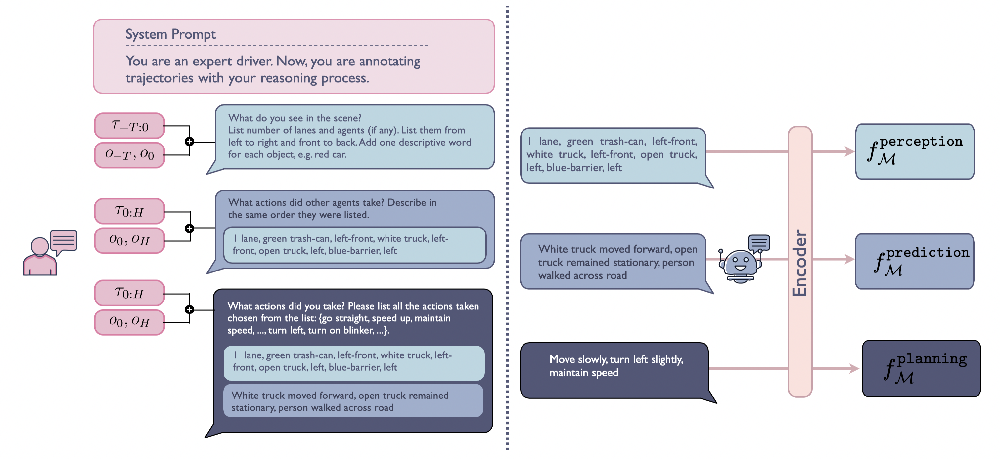

In autonomous driving, we aim to achieve both (1) fast online planning with a modularized differentiable end-to-end (e2e) architecture, and (2) human-like reasoning process with a vision-language model (VLM). Our key idea is to distill the reasoning process and commonsense knowledge from a VLM to the e2e driving model.
While autonomous driving (AD) stacks struggle with decision making under partial observability and real-world complexity, human drivers are capable of applying commonsense reasoning to make near-optimal decisions with limited information. Recent work has attempted to leverage finetuned Vision-Language Models (VLMs) for trajectory planning at inference time to emulate human behavior, but the long inference time makes them impractical to deploy. To bridge this gap, we propose VLM-Embedded Reasoning for autonomous DrIving (VERDI), a training-time framework that distills the reasoning process and commonsense knowledge of VLMs into the AD stack. VERDI augments modular differentiable end-to-end (e2e) AD models by aligning intermediate module outputs at the perception, prediction, and planning stages with text features explaining the driving reasoning process produced by VLMs. We validate VERDI in both open-loop (NuScenes and Bench2Drive benchmarks) and closed-loop (HugSim Simulator) settings. We find that VERDI outperforms existing e2e methods that do not embed reasoning by up to 11% in distance and 11% in driving performance, while maintaining real-time inference speed.
We align language features acquired from the VLM reasoning module with driving features acquired from the e2e driving model. Specifically, we do so for each of the perception, prediction, and planning submodules to effectively embed the VLM reasoning process into the e2e model.
To acquire language features, we use the ground truth trajectory to query a VLM for the reasoning process behind the driving behavior. We ask in the order of perception, prediction, and planning, about other agents and objects in spatial order, other agents' behavior, and the ego vehicle's behavior. After obtaining textual responses from the VLM, we map them to the latent space with a language encoder.

To obtain driving features, we introduce a learnable Progressive Feature Projector (PFP) to each of the perception, prediction, and planning submodules. The PFPs map driving features to the same latent space as the language features, and align them with a cosine similarity loss.
Evaluation on the HugSim Closed-loop Simulator Benchmark with the HUGSIM nuScenes dataset. Metrics are averaged by difficulty levels. The best results between architecturally-equivalent models (VAD-Base, VERDI) are bolded. We further show the best results overall as underlined. Results show scene-level performance on core metrics including No Collision (NC), Drivable Area Compliance (DAC), Time-To-Collision (TTC), Comfort (COM), Route Completion (Rc), and HugSim Driving Score (HDScore). VERDI achieves the best overall HDScore among all methods and improves NC, DAC, TTC, and COM over VAD-Base.
| Method | Requires VLM @ Inference |
Params/Latency [M]/[ms] |
Difficulty | NC ↑ | DAC ↑ | TTC ↑ | COM ↑ | Rc ↑ | Overall HDScore ↑ | |
|---|---|---|---|---|---|---|---|---|---|---|
| Different Architectures | Alpamayo | ✓ | 11079 / 5246 | easy | 0.976 | 1.000 | 0.969 | 0.922 | 0.046 | 0.044 |
| medium | 0.977 | 1.000 | 0.969 | 0.921 | 0.046 | 0.043 | ||||
| hard | 0.968 | 1.000 | 0.963 | 0.906 | 0.041 | 0.038 | ||||
| extreme | 0.962 | 1.000 | 0.955 | 0.891 | 0.042 | 0.039 | ||||
| Overall | 0.971 | 1.000 | 0.964 | 0.910 | 0.044 | 0.041 | ||||
| OpenEMMA | ✓ | 7000 / 573 | easy | 0.552 | 0.764 | 0.480 | 1.000 | 0.450 | 0.209 | |
| medium | 0.512 | 0.790 | 0.448 | 1.000 | 0.376 | 0.172 | ||||
| hard | 0.312 | 0.823 | 0.261 | 1.000 | 0.310 | 0.080 | ||||
| extreme | 0.388 | 0.805 | 0.350 | 1.000 | 0.291 | 0.104 | ||||
| Overall | 0.441 | 0.796 | 0.385 | 1.000 | 0.357 | 0.141 | ||||
| OmniDrive | ✓ | 6849 / 554 | easy | 0.830 | 0.197 | 0.899 | 0.000 | 0.069 | 0.010 | |
| medium | 0.786 | 0.157 | 0.767 | 0.000 | 0.087 | 0.004 | ||||
| hard | 0.757 | 0.200 | 0.731 | 0.000 | 0.075 | 0.005 | ||||
| extreme | 0.766 | 0.224 | 0.686 | 0.000 | 0.074 | 0.006 | ||||
| Overall | 0.785 | 0.194 | 0.771 | 0.000 | 0.076 | 0.006 | ||||
| UniAD | - | 132 / 724 | easy | 0.813 | 0.967 | 0.661 | 0.111 | 0.757 | 0.396 | |
| medium | 0.708 | 0.959 | 0.412 | 0.199 | 0.389 | 0.140 | ||||
| hard | 0.716 | 0.978 | 0.398 | 0.109 | 0.370 | 0.113 | ||||
| extreme | 0.649 | 0.950 | 0.375 | 0.096 | 0.291 | 0.107 | ||||
| Overall | 0.721 | 0.963 | 0.462 | 0.129 | 0.452 | 0.189 | ||||
| Equivalent Architecture | VAD-Base | - | 58 / 359 | easy | 0.768 | 0.880 | 0.611 | 0.897 | 0.499 | 0.314 |
| medium | 0.537 | 0.912 | 0.305 | 0.897 | 0.308 | 0.108 | ||||
| hard | 0.631 | 0.877 | 0.387 | 0.934 | 0.367 | 0.170 | ||||
| extreme | 0.450 | 0.957 | 0.320 | 0.876 | 0.328 | 0.154 | ||||
| Overall | 0.597 | 0.906 | 0.406 | 0.901 | 0.375 | 0.186 | ||||
| VERDI | - | 58 / 359 | easy | 0.797 | 0.945 | 0.664 | 0.963 | 0.470 | 0.328 | |
| medium | 0.649 | 0.927 | 0.466 | 0.958 | 0.315 | 0.143 | ||||
| hard | 0.623 | 0.941 | 0.389 | 0.951 | 0.368 | 0.213 | ||||
| extreme | 0.566 | 0.961 | 0.358 | 0.944 | 0.265 | 0.115 | ||||
| Overall | 0.659 | 0.944 | 0.469 | 0.954 | 0.354 | 0.200 |
We show superior performance against our direct baseline VAD, a supervised e2e model without embedded reasoning. The video shows the multi-view camera observations on the left and the BEV view on the right. Each of the example shows our successful performance on the perception, prediction, and planning modules. We also show the VLM text response for each testing case to demonstrate that VERDI has successfully distilled VLM's reasoning and commonsense knowledge.
| Method | Requires VLM @ Inference |
FPS ↑ | (1s) ↓ | (2s) ↓ | (3s) ↓ | (avg.) ↓ | Ego Status |
|---|---|---|---|---|---|---|---|
| DriveVLM | ✓ | 2.43 | 0.18 | 0.34 | 0.68 | 0.40 | ✓ |
| OpenEMMA | ✓ | NA | 1.45 | 3.21 | 3.76 | 2.81 | ✓ |
| OmniDrive | ✓ | 0.44 | 1.15 | 1.96 | 2.84 | 1.98 | - |
| UniAD | - | 1.8 | 0.48 | 0.96 | 1.05 | 0.83 | - |
| VAD-Base | - | 4.5 | 0.41 | 0.70 | 1.05 | 0.72 | - |
| VERDI | - | 4.5 | 0.36 | 0.62 | 0.96 | 0.65 | - |
nuScenes evaluation results. Our method performs 10% better than the direct baseline VAD. Methods are compared according to: (1) Whether a VLM is required at inference; (2) Inference speed (FPS); (3) Trajectory accuracy, measured as the \( \ell_{2} \) distance to the expert trajectory at 1s, 2s, and 3s horizon; and (4) Whether precise historical ego-vehicle state is used in planning. In a fair comparison with methods not having privileged access to ego status, including location, VERDI achieves the best performance across all metrics.
| Method | Avg. ↓ |
|---|---|
| AD-MLP | 3.64 |
| UniAD-Tiny | 0.80 |
| UniAD-Base | 0.73 |
| VAD | 0.91 |
| TCP* | 1.70 |
| TCP-ctrl* | – |
| TCP-traj* | 1.70 |
| TCP-traj w/o distillation | 1.96 |
| ThinkTwice* | 0.95 |
| DriveAdapter* | 1.01 |
| VERDI* | 0.81 |
Bench2Drive evaluation results. Average is averaged over predictions in 2 seconds under 2Hz. * denotes expert feature distillation. VERDI performs over 11% better than the direct baseline VAD and achieves the best performance among all methods that require feature distillation.
@misc{feng2025verdivlmembeddedreasoningautonomous,
title={VERDI: VLM-Embedded Reasoning for Autonomous Driving},
author={Bowen Feng and Zhiting Mei and Baiang Li and Julian Ost and Roger Girgis and Anirudha Majumdar and Felix Heide},
year={2025},
eprint={2505.15925},
archivePrefix={arXiv},
primaryClass={cs.RO},
url={https://arxiv.org/abs/2505.15925},
}